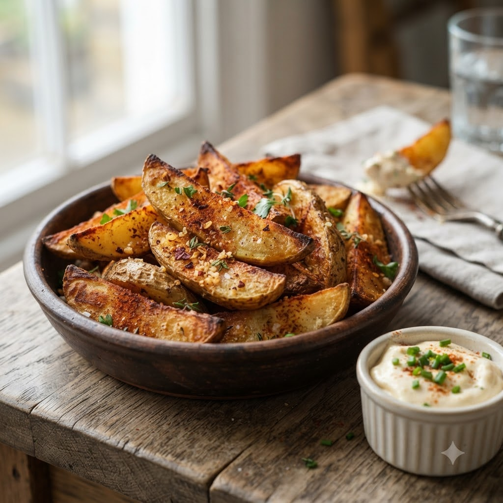

Chilli Garlic Potato Wedges

Chilli Garlic Potato Wedges
Airfryer – Fry 200°C 19 min — Serves 4
Ingredients
- 3 large potatoes, cut into wedges
- 1 tbsp oil
- 1 tsp chilli flakes
- 1 tsp garlic (lehsun) powder
- 1/2 tsp smoked paprika
- Salt to taste
Method
1Preheat: Preheat the Airfryer to 200°C for 4 minutes before adding the food to the basket.
2Toss wedges with oil and all seasonings until evenly coated.
3Arrange in a single layer in the basket.
4Air-fry at 200°C for 19 minutes, shaking every 5 minutes, until crisp outside and soft inside.
5Serve with a garlic dip or ketchup.